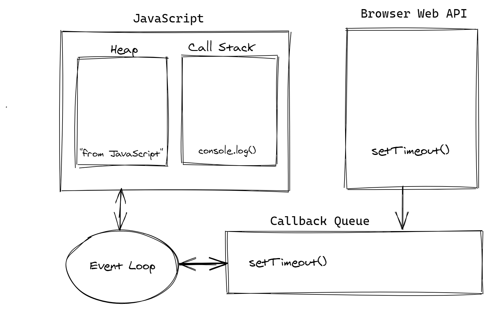

This method is Used to call a function or evaluate an expression after a specified number of milliseconds.
setTimeOut (()=>{
console.log("hello")
},3000) //after complition of 3sec hello will return
Callback queue is a data structure which gets ordinary callback functions coming from asynchronous functions such as setTimeout after the times expires.Callback function has a lesser priority than the microtask queue.
Event loop acts as a mediator b/w callstack and callback queue.Event loop is the secret by which javascript gives illusion that it is a multithreaded language whereas it is single threaded. Here the callback function in the event queue has not yet run and is wiating for its time to put into the stack when the callback function will get excuted and webAPI is making the mentioned wait. Hence when the stack gets empty here event loop comes where it takes first event from the callback queue and puts it into the callstack.This cycle is called event loop.